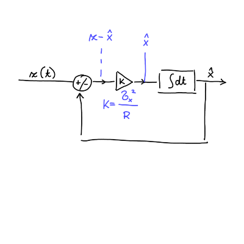

2026/02/26
Spomnimo: izmerek je definiran kot
\[ z = x + r, \]
kjer je \( x \) prava vrednosti, \( r \) pa šum porazdeljen po normalni porazdelitvi \( N(0, \sigma) \).
Pričakovana vrednost šuma je
\[ \left\langle r \right\rangle = \int\limits_{- \infty}^{\infty} \frac{\mathrm{d} P}{\mathrm{d} r} \cdot r \, \mathrm{d} r = 0, \]
saj je \( r \) liha funkcija na sodem intervalu.
To pomeni, da bo varianca - odstopanje od pričakovane vrednosti
\[ \left\langle \left( r - \left\langle r \right\rangle \right) ^2 \right\rangle = \left\langle r ^2 \right\rangle. \]
Pričakovana vrednost kvadrata pa je
\[\begin{align*} \left\langle r ^2 \right\rangle &= \int\limits_{}^{} \frac{\mathrm{d} P}{\mathrm{d} r} \cdot r ^2 \, \mathrm{d} r \\ &= \int\limits_{}^{} \frac{1}{\sqrt{2 \pi}} \frac{1}{\sigma} r ^2 e^{- \frac{r ^2}{2 \sigma ^2}} \, \mathrm{d} r. \end{align*} \]Uvedemo novo spremenljivko \( \frac{r ^2}{2 \sigma ^2} = u ^2 \) in \( \mathrm{d} r = \sqrt{2 \sigma} \mathrm{d} u \) in vrednost integrala je
\[ \left\langle r ^2 \right\rangle = 2 \sigma ^2 \frac{1}{ \sqrt{\pi}} \int\limits_{}^{} u ^2 e^{- u ^2} \, \mathrm{d} u = \sigma ^2, \]
saj je vrednost integrala \( \frac{\pi}{2} \).
V primeru uvedbe spremenljivke \( u = \frac{r}{\sigma} \) je \( u \) porazdeljen po \( N (0, 1) \), kar je standardizirana normalna porazdelitev.
Imamo izmerke \( z_i \) za \( i = 1,2, \ldots, N \), ki so porazdeljeni po \( N(x, \sigma) \). Povprečje teh izmerkov je potem
\[ \bar{z} = \frac{1}{N} \sum\limits_{i = 1}^N z_i. \]
Zanima nas, kakšna je porazdelitev povprečne vrednosti \( \frac{\mathrm{d} P}{\mathrm{d} \mathbf{z}} \).
Povprečna vrednost odstopanja za \( i \to \infty \) je ničeln
\[ \overline{\left( z_i - x \right)} = \bar{r} = 0. \]
Iz tega razloga je tudi
\[ \overline{\left( \bar{z} - x\right)} = 0, \]
saj je \( \bar{z} \) definirana z \( z_i \).
Izračunati moramo še
\[\begin{align*} \overline{\left( \bar{z} - z \right) ^2} &= \overline{\left( \frac{1}{N} \sum\limits_{i=1}^N z_i - x \right) ^2} \\ &= \frac{1}{N ^2} \overline{\left( \sum\limits_{i = 1}^N z_i - N x \right) ^2} \\ &= \frac{1}{N ^2} \overline{\left( \sum\limits_{i = 1}^N (z_i - x) \right) ^2} \\ &= \frac{1}{N ^2} \left( \overline{\sum\limits_{i = 1}^N \left( z_i - x \right) ^2} + \overline{\sum\limits_{i = 1}^N \sum\limits_{j = 1}^N \left( z_i - x \right) \left( z_j - x \right)} \right) \\ &= \frac{1}{N ^2} \left( \overline{\sum\limits_{i = 1}^N \left( z_i - x \right) ^2} + \overline{\sum\limits_{i = 1}^N \sum\limits_{j = 1}^N r_i r_j} \right) \\ &= \frac{1}{N ^2} \sum\limits_{i = 1}^N \overline{\left( z_i - x \right) ^2} = \frac{\sigma}{N} \end{align*} \]Zaključimo torej, da je povprečna vrednost porazdeljena po ožji normalni porazdelitvi
\[ \frac{\mathrm{d} P}{\mathrm{d} \bar{z}} = N\left(x, \frac{\sigma}{\sqrt{\pi}}\right). \]
To je tudi smisel ponavljanja in povprečevanja vrednosti.
Imejmo dve oceni
\[ \bar{z}_1 = \frac{1}{n} \sum\limits_{i = 1}^n z_i, \ \sigma_1 ^2 = \frac{\sigma ^2}{n} \quad \text{ in } \quad \bar{z}_2 = \frac{1}{m} \sum\limits_{i = 1}^m z_i, \ \sigma_2 ^2 = \frac{\sigma ^2}{m} \]
Oceni želimo združiti v oceno \( z_3 \) z disperzijo \( \sigma_3 \). Po definiciji bo povprečje te ocene
\[ \bar{z}_3 = \frac{1}{n + m} \sum\limits_{i = 1}^{n + m} z_i, \ \sigma_3 ^2 = \frac{\sigma}{n + m}. \]
Razdelimo vsoto na dva dela
\[ \bar{z}_3 = \frac{n}{n + m} \left( \frac{1}{n} \sum\limits_{i = 1}^n z_i \right) + \frac{m}{n + m} \left( \frac{1}{m} \sum\limits_{i = 1}^m z_i \right), \]
kjer sta faktorja \( \frac{n}{n + m} \) in \( \frac{m}{ n + m} \) uteži, ki ju lahko zapišemo tudi z disperzijo
\[ \frac{n}{n + m} = \frac{\sigma ^2 \sigma_3 ^2}{\sigma_1 ^2 \sigma ^2} = \frac{\sigma_3 ^2}{\sigma_1 ^2} \quad \text{ in } \quad \frac{m}{n + m} = \frac{\sigma_3 ^2}{\sigma_2 ^2}. \]
Hkrati velja še
\[ \sigma_3 ^{-2} = \frac{n + m}{\sigma ^2} = \sigma_1 ^2 + \sigma_2 ^2, \]
iz česar sledi
\[ \frac{1}{\sigma_3 ^2} = \frac{1}{\sigma_1 ^2} + \frac{1}{\sigma_2 ^2} \quad \text{ in } \quad \sigma_3 ^2 = \frac{\sigma_1 ^2 \sigma_2 ^2}{\sigma_1 ^2 + \sigma_2 ^2}. \]
Združeno oceno torej zapišemo kot
\[ \bar{z}_3 = \frac{\sigma_3 ^2}{\sigma_1 ^2} \bar{z}_1 + \frac{\sigma_3 ^2}{\sigma_2 ^2} \bar{z}_2 \]
Sledi
\[ \bar{z}_3 = \frac{\sigma_2 ^2}{\sigma_1 ^2 + \sigma_2 ^2} \bar{z}_1 + \frac{\sigma_1 ^2}{\sigma_1 ^2 + \sigma_2 ^2} \bar{z}_2, \]
kar lahko zapišemo tudi kot
\[\begin{equation} \label{eq:1} \bar{z}_3 = \bar{z}_1 + \frac{\sigma_1 ^2}{\sigma_1 ^2 + \sigma_2 ^2} \left( \bar{z}_2 - \bar{z}_1 \right), \end{equation} \]kjer je \( \bar{z}_3 \) nova ocena, \( \bar{z}_1 \) stara ocena, faktor pred oklepajem utež in razlika v oklepaju je inovacija.
\( \sigma_1 \ll \sigma_2 \) nam pove, da ima bolj natančna ocena večjo utež. Enačba \(\ref{eq:1}\) je optimalno združena ocena.
S kvadratno formo \( 2 \dot{J}(x) \) bomo prišli do podobnega zaključka kot v prejšnjem poglavju. Imejmo dve meritvi
\[ z_1 = \mathcal{N}(x, \sigma_1) \quad \text{ in } \quad z_2 = \mathcal{N}(x, \sigma_2). \]
Meritvi lahko pretvorimo v standardno normalno Gaussovo porazdelitev \( \mathcal{N}(0, 1) \)
\[ \mathcal{N}(0, 1) = \frac{\left( z_1 - x \right)}{\sigma_1} = \frac{\left( z_2 - x \right)}{\sigma_2}. \]
Kvadratno forma je potem
\[ 2 J(x) = \frac{\left( z_1 - x \right) ^2}{\sigma_1 ^2} + \frac{\left( z_2 - x \right) ^2}{\sigma_2 ^2}. \]
Cilj je dobiti optimalno združitev, zato minimiziramo zgornji seštevek in zahtevamo
\[\begin{align*} 0 &= \frac{\mathrm{d} }{\mathrm{d} x} \left( 2 J(x) \right) \\ &= - \frac{2 \left( z_1 - x \right)}{\sigma_1 ^2} - \frac{2 \left( z_2 - x \right)}{\sigma_2 ^2} \end{align*} \]Izpostavimo lahko sprmemenljivko \( x \)
\[ x \left[ \frac{1}{\sigma_1 ^2} + \frac{1}{\sigma_2 ^2} \right] = \frac{z_1}{\sigma_1 ^2} + \frac{z_2}{\sigma_2 ^2} \]
in optimalno združevanje je potem
\[ x = z_3 = \left( \frac{1}{\sigma_1 ^2} + \frac{1}{\sigma_2 ^2} \right) ^{-1} \left[ \frac{z_1}{\sigma_1 ^2} + \frac{z_2}{\sigma_2 ^2} \right] \]
Imamo dva izmerka
\[ z_1 = x + r_1, \ \left\langle r_1 ^2 \right\rangle = \sigma_1 ^2 \quad \text{ in } \quad z_2 = x + r_2, \ \left\langle r_2 ^2 \right\rangle = \sigma_2 ^2. \]
Združena ocena bo linearna kombinacija obeh
\[ z_3 = x + r_3 = \alpha z_1 + \beta z_2, \]
iz česar sledi
\[ x + r_3 = \left( \alpha + \beta \right) x + \alpha r_1 + \beta r_2. \]
Dobimo pogoj \( \alpha + \beta = 1 \) in posledično velja \( \alpha r_1 + \beta r_2 = r_3 \).
Pričakovana vrednost \( r_3 \) je 0, saj sta pričakovani vrednosti posameznih komponent \( 0 \).
Pričakovana vrednost kvadrata pa je
\[\begin{align*} \left\langle r_3 ^2 \right\rangle &= \left\langle \left( \alpha r_1 + \left( 1 - \alpha \right) r_2 \right) ^2 \right\rangle \\ &= \left\langle \alpha ^2 r_1 ^2 + \left( 1 - \alpha \right) ^2 r_2 ^2 + 2 \alpha \left( 1 - \alpha \right)r_1 r_2\right\rangle \end{align*} \]Disperzija združene meritve je torej
\[ \sigma_3 ^2 = \alpha ^2 \left\langle r_1 ^2 \right\rangle + \left( 1 - \alpha \right) ^2 \left\langle r_2 ^2 \right\rangle + 2 \alpha \left( 1 - \alpha \right) \left\langle r_1 r_2 \right\rangle \]
Šuma sta nekorelirana, zato je njuna pričakovana vrednost \( 0 \). Z odvajanjem po parametru \( \alpha \) lahko določimo optimalno vrednost disperzijo
\[ \frac{\mathrm{d} }{\mathrm{d} \alpha} \left( \sigma_3 ^2 \right) = 2 \alpha \sigma_1 ^2 + 2 \left( 1- \alpha \right) (-1) \sigma_2 ^2 = 0. \]
Dobimo potrditev, da je to dejansko optimalno združena meritev, saj sta enaka rezultata kvadratni formi
\[ \alpha = \frac{\sigma_2 ^2}{\alpha_1 ^2 + \sigma_2 ^2} \quad \text{ in } \quad \beta = 1 - \alpha = \frac{\sigma_1 ^2}{\sigma_1 ^2 + \sigma_2 ^2} \]
Imamo 2 seta meritev \( \left\{ x_i \right\} \) in \( \left\{ y_i \right\} \) za \( i = 1, 2, \ldots, N \).
Naj obstaja povezava med šumom prve in druge meritve
\[ w_x = x_i - \bar{x} \quad \text{ in } \quad w_y = y_i - \bar{y}, \]
kjer je \( \left\langle w_x \right\rangle = \left\langle w_y \right\rangle =0 \) in \( \left\langle w_x ^2 \right\rangle = \sigma_x ^2 \) in \( \left\langle w_y ^2 \right\rangle = \sigma_y ^2 \).
Definicija kovariance je
\[ \sigma_{xy} = \rho_{xy} \sigma_x \sigma_y = \left\langle w_x w_y \right\rangle \]
kjer je \( \rho_{xy} \) korelacijski koeficient in zaseda vrednosti \( \left| \rho_{xy} \right| \le 1\).
Dokazujemo, da je
\[ \sigma_{xy} = \overline{xy} - \bar{x} \bar{y}. \]
Upoštevamo defincije
\[\begin{align*} \sigma_{xy} &= \overline{xy} - \bar{x} \bar{y} \\ &= \frac{1}{N} \sum\limits_{}^{}\left( x_i - \bar{x} \right) \left( y_i - \bar{y} \right) \\ &= \frac{1}{N} \sum\limits_{}^{} \left( x_i y_i - x_i \bar{y} - \bar{x} y_i + \bar{x} \bar{y} \right) \\ &= \frac{1}{N} \left( \sum\limits_{}^{} x_i y_i - \bar{y} \sum\limits_{}^{} x_i - \bar{x} \sum\limits_{}^{} y_i + \bar{x} \bar{y} \sum\limits_{}^{} i \right) \\ &= \left( \frac{1}{N} \sum\limits_{}^{} x_i y_i - \bar{x} \bar{y} - \bar{x} \bar{y} + \bar{x} \bar{y} \frac{N}{N} \right) \\ &= \overline{xy} - \bar{x} \bar{y} \end{align*} \]Za nekolerirane ocene velja \( \rho = 0 \), za popolnoma (anti)korelirane \( x = (-)y \) velja \( \rho = (-) 1 \).
Imejmo dva izmerka \( z_1, \sigma_1 \) in \( z_2, \sigma_2 \), ki imata korelacijski koeficient \( \rho \).
Posamezne izmerka sta definirana kot
\[ z_1 = x + w_1, \ \left\langle w_1 ^2 \right\rangle = \sigma_1 ^2 \quad \text{ in } \quad z_2 = x + w_2 , \ \left\langle w_2 ^2 \right\rangle = \sigma_2 ^2 \]
in velja \( \left\langle w_1 w_2 \right\rangle \ne 0 \).
Po definiciji bo korelacija
\[ \sigma_{12} = \rho \sigma_1 \sigma_2 = \left\langle \left( z_1 - x \right) \left( z_2 - x \right) \right\rangle = \left\langle w_1 w_2 \right\rangle. \]
Šuma nista neodvisna, torej ga lahko zapišemo kot linearno kombinacijo druge meritve in neodvisnega dela \( w_1 = \alpha w_2 + w \), kjer velja \( \left\langle w_2 w \right\rangle = 0\), kar je ekvivalentno
\[ (z_1 - x) = \alpha (z_2 - x) + w, \ \left\langle w (z_2 - x) \right\rangle = 0. \]
To linearno odvisnost upoštevamo v korelaciji
\[\begin{align*} \rho \sigma_1 \sigma_2 &= \left\langle \left( \alpha w_2 + w \right) \right\rangle \\ &= \alpha \sigma_1 ^2 \end{align*} \]Iz tega sledi, da je koeficient linearne odvisnosti enak
\[ \alpha = \rho \frac{\sigma_1}{\sigma_2}. \]
Zapišimo še varianco neodvisnega šuma
\[\begin{align*} \sigma_1 ^2 = \left\langle w_1 ^2 \right\rangle &= \left\langle \left( \alpha w_2 + w \right) ^2 \right\rangle \\ &= \left\langle \alpha ^2 w_2 ^2 + w ^2 + 2\alpha w_2 w \right\rangle\\ &= \alpha ^2 \sigma_2 ^2 + \sigma_w ^2 \end{align*} \]Varianco neodvisnega šuma ob upoštevanju vrednosti \( \alpha \) potem zapišemo
\[ \sigma_w ^2 = \sigma_1 ^2 \left( 1 - \rho ^2 \right) \]
Optimalno združevanje ocen poteka preko kvadratov nekoreliranih šumov
\[ 2J(x) = \frac{w_2 ^2}{\sigma_2 ^2} + \frac{w ^2}{\sigma_w ^2} = \frac{w_2 ^2}{\sigma_2 ^2} + \frac{\left( w_1 - \alpha w_2 \right) ^2}{\sigma_w ^2}. \]
Razdelimo na vsoto ulomkov in upoštevamo definicijo \( \alpha \) in dobimo
\[ 2 J(x) = \frac{w_2 ^2}{\sigma_2 ^2} + \frac{\rho ^2}{\sigma_2 ^2} \frac{w_2 ^2}{\left( 1 - \rho ^2 \right)} + \frac{w_1 ^2}{\sigma_1 ^2 \left( 1 - \rho ^2 \right)} - \frac{2 \rho w_1 w_2}{\sigma_1 \sigma_2 \left( 1 - \rho ^2 \right)}. \]
V prvih dveh členih izpostavimo skupne lastnosti, ter upoštevamo definicijo šuma \( w = z - x \)
\[ 2J(x) = \left( 1 + \frac{\rho ^2}{1 - \rho ^2} \right) \frac{\left( z_2 - x \right) ^2}{\sigma_2 ^2} + \frac{\left( z_1 - x \right) ^2}{\sigma_1 ^2 \left( 1 - \rho ^2 \right) } - \frac{2 \rho \left( z_1 - x \right) \left( z_2 - x \right)}{\sigma_1 \sigma_2 \left( 1 - \rho ^2 \right)} \]
Prvi oklepaj se razreši in iščemo optimum za funkcijo
\[ 2J(x) = \frac{\left( z_2 - x \right) ^2}{\left( 1 - \rho ^2 \right)\sigma_2 ^2} + \frac{\left( z_1 - x \right) ^2}{\left( 1 - \rho ^2 \right) \sigma_1 ^2} - \frac{2 \sigma \left( z_1 z_2 - x (z_1 + z_2) + x ^2 \right)}{\sigma_1 \sigma_2 \left( 1 - \rho ^2 \right)} \]
Minimum te funkcije je
\[ \frac{\mathrm{d} }{\mathrm{d} x} (2J(x)) = \frac{z_2 - x}{\sigma_1 ^2} + \frac{z_1 - x}{\sigma_1 ^2} + \frac{\rho \left( - (z_1 + z_2) + 2x \right)}{\sigma_1 \sigma_2}. \]
Izrazimo \( x \)
\[ x \left[ \frac{1}{\sigma_2 ^2} + \frac{1}{\sigma_1 ^2} - \frac{2 \rho}{\sigma_1 \sigma_2} \right] = \frac{z_2}{\sigma_2 ^2} + \frac{z_1}{\sigma_1} - \frac{\rho(z_1 + z_2)}{\sigma_1 \sigma_2}, \]
iz česar sledi, da je optimalno meritev pri
\[ x_{opt} = \left[ \frac{1}{\sigma_2 ^2} + \frac{1}{\sigma_1 ^2} - \frac{2 \rho}{\sigma_1 \sigma_2} \right] ^{-1}\left[ \frac{z_2}{\sigma_2 ^2} + \frac{z_1}{\sigma_1} - \frac{\rho(z_1 + z_2)}{\sigma_1 \sigma_2} \right]. \]
Pri \( \rho = 0 \) imamo potem
\[ x_{opt} = \left( \frac{1}{\sigma_1 ^2} = \frac{1}{\sigma_2 ^2} \right) ^{-1} \left[ \frac{z_1}{\sigma_1 ^2} + \frac{z_2}{\sigma_2 ^2} \right]. \]
Za \( \rho = 1 \) imamo potem
\[ x = z_3 = z_2 = z_1. \]
Če je \( \rho \) poljuben, potem je \( \sigma_1 = \sigma_2 \), potem je
\[ x = \left( \frac{1 + 1 - 2 \rho}{\sigma ^2} \right)^{-1} \left( \frac{\left( z_1 + z_2 \right) - \rho (z_1 - z_2)}{\sigma ^2} \right) = \frac{z_1 + z_2}{2} . \]
Imamo sistem \( S \) s spremenljivkami \( x \) in merilni sistem \( M \), ki ju povezuje senzor z izmerki \( z_j \). Merilni sistem \( M \) ima ocene \( \hat{x} \). S časom \( T \) vzorčimo - merimo. Dobimo rezultate oblike
\[ z_j = x + r_j, \]
kjer je \( x \) prava vrednosti in \( r_j \) normalni Gaussov šum.
Merilni šum je nekoreliran, kar matematično zapišemo
\[ \left\langle r_i r_j \right\rangle = \delta_{ij} \sigma ^2. \]
Idealizacija bi bila, da je tudi ob manjšanju \( T \to 0 \) šum še vedno nekoreliran.
Opravili smo že \( n \) meritev, torej smo ob času \( t = n T \). Optimalna ocena ob \( n \)-ti meritvi je tudi že znana
\[ \hat{x}_n = \frac{1}{n} \sum\limits_{i = 1}^n z_i, \quad \hat{\sigma}_n = \frac{\sigma ^2}{n}. \]
Izmerimo \( n + 1 \)-to meritev. Za to meritev prav tako lahko zapišemo
\[ \hat{x}_{n + 1} = \frac{1}{n + 1} \sum\limits_{i = 1}^{n + 1} z_i, \quad \hat{\sigma}_{n + 1 } = \frac{\sigma ^2}{n + 1}. \]
\( n + 1 \) meritev lahko razbijemo na
\[ \hat{x}_{n + 1} = \frac{1}{n + 1} \left( \sum\limits_{i = 1}^n z_i + z_{n + 1} \right) = \frac{n}{n + 1} \left( \sum\limits_{i = 1}^n \frac{1}{n} z_i \right) + \frac{1}{n + 1} z_{n + 1}. \]
Prepoznamo meritev iz \( n \)-tega koraka in dodamo števcu prvega ulomka \( 1 - 1 \) in dobimo
\[ \hat{x}_{n + 1} = \frac{n + 1 - 1}{n + 1} \hat{x}_n + \frac{1}{n + 1} z_{n + 1}. \]
Izrazimo lahko torej optimalno oceno
\[ \hat{x}_{n + 1} = \hat{x}_n \frac{1}{n + 1} \left( z_{n + 1} - \hat{x}_n \right). \]
Za varianco velja
\[ \hat{\sigma}_{n + 1} ^{-2} = \hat{\sigma}_n ^{-2} + \hat{\sigma}^{-2}. \]
Novo oceno torej lahko zapišemo kot
\[ \hat{x}_{n + 1} = \hat{x}_n + \frac{\hat{\sigma}_{n + 1} ^2}{\sigma ^2} \left( z_{n + 1} - \hat{x}_n \right), \]
kjer je \( \hat{x}_n \) stara ocena, faktor z variancami je utež, in kakor od prej \( (z_{n + 1} - \hat{x}_n) \) je inovacija. To je primer principa povratne zanke.
Utež označimo s
\[ K_{n + 1} = \frac{\hat{\sigma}_{n + 1} ^2}{\sigma ^2}, \]
in pridobljena shema je filter s spremenljivim ojačevalnim faktorjem \( K_n \).
V limiti \( T \to 0 \) gre razlika ocene
\[ \lim_{T \to 0} = \frac{\hat{x}_{n + 1} - \hat{x}_n}{T} = \dot{\hat{x}} (t) = \frac{\hat{\sigma}_{n + 1} ^2}{\sigma ^2 T} \left( z_{n + 1} - \hat{x}_n \right). \]
V tej limiti gredo naše diskretne spremenljivke v zvezen spekter \( \hat{x}_n \to \hat{x}, \ \hat{\sigma}_n ^2 \to \hat{\sigma}_x ^2 \) in \( z_n \to z(t) \). There's some discussion to be had, ali je meritev dejansko lahko zvezna.
Zapišemo zvezno meritev
\[ z(t) = x + r(t), \]
potem je koreliranost
\[ \left\langle r(t) r(t') \right\rangle = \delta(t - t') R \]
Definiramo \( \tau \) kot končen (minimalen) čas fluktuacij.
Ločimo dva primera za časovne intervale \( t \), s katerimi merimo
Če zahtevamo
\[\begin{equation} \label{eq:2} \lim_{T \to 0} \left( \sigma ^2 T \right) = R > 0 \end{equation} \]potem lahko ohranimo nekoreliranost čez vse čase. Z drugimi besedami meritve v limiti \( T \to 0 \) obravnavamo kot nekorelirane, vendar se ustrezno povečuje napaka meritev, da se produkt v enačbi \(\ref{eq:2}\) ohranja.
Drugačen način, da pridemo do istega spoznanja. Če ima diskreten spekter korelacija
\[ \left\langle r_i r_j \right\rangle = \delta_{ij} \sigma ^2. \]
Za vse čase je potem korelacija
\[ \sum\limits_{}^{} \left\langle r_i r_j \right\rangle T = \sum\limits_{}^{} \delta_{ij} \sigma ^2 T = \sigma ^2 T. \]
V zveznem spektru pa je korelacija
\[ \left\langle r(t) r(t') \right\rangle = \delta (t - t') R, \]
in je potem
\[ \int\limits_{}^{} \delta(t - t') R \, \mathrm{d} t = R. \]
V limiti \( T \to 0 \) dobimo enak pogoj \(\ref{eq:2}\).
Vrnimo se nazaj k odvodu
\[ \dot{\hat{x}} (t) = \frac{\hat{\sigma}_x ^2}{R} \left( z - \hat{x} \right). \]
Sedaj nas zanima še, kako se disperzija v zvezni sliki spreminja. Spomnimo, da velja
\[ \frac{1}{\hat{\sigma}_{n + 1} ^2} = \frac{1}{\hat{\sigma} _n ^2} + \frac{1}{\sigma ^2} = \frac{\sigma ^2 + \hat{\sigma}_n ^2}{\hat{\sigma}_n ^2 \sigma ^2}. \]
Potem zapišemo
\[ \dot{\hat{\sigma}}_x ^2 (t) = \frac{\hat{\sigma}_{n + 1} ^2 - \hat{\sigma}_n ^2}{T}. \]
Upoštevamo identiteto in zapišemo
\[\begin{align*} \dot{\hat{\sigma}} _x ^2 (t) &= \frac{1}{T}\left( \frac{\hat{\sigma}_n ^2 \sigma ^2}{\hat{\sigma}_n ^2 + \sigma ^2} - \frac{\hat{\sigma}_n ^2 \left( \hat{\sigma}_n ^2 + \sigma ^2 \right)}{\hat{\sigma}_n ^2 + \sigma ^2} \right) \\ &= - \frac{\left[ \hat{\sigma}_n ^2 (t) \right] ^2}{\cancel{\hat{\sigma}_n ^2 T} + \sigma ^2 T} = - \frac{\left( \hat{\sigma}_n ^2 \right) ^2}{R}, \end{align*} \]kjer smo upoštevali, da imamo limito \( T \to 0 \).
Dobili smo način, kako deluje naš filter. Sproti rešuje diferencialno enačbo in popravlja odstopanja(?)
\[ \dot{\hat{x}} = \frac{\hat{\sigma}_x ^2}{R} \left( z - \hat{x} \right) \quad \text{ in } \quad \dot{\hat{\sigma}} = - \frac{\left( \hat{\sigma}_x ^2 \right) ^2}{R} \]
